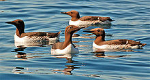
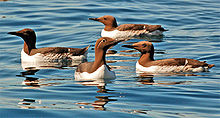

| Common Murre | |
|---|---|
|  | |
| Uria aalge aalge in breeding plumage at Runde (Norway). Note "bridled" bird in centre. | |
| Conservation status | |
| Binomial name | |
| Uria aalge (Pontoppidan, 1763) |
|
| Synonyms | |
|
Colymbus aalge Pontoppidan, 1763 |
| Common Murre | |
|---|---|
|  | |
| Uria aalge aalge in breeding plumage at Runde (Norway). Note "bridled" bird in centre. | |
| Conservation status | |
| Binomial name | |
| Uria aalge (Pontoppidan, 1763) |
|
| Synonyms | |
|
Colymbus aalge Pontoppidan, 1763 |
The Common Murre or Common Guillemot (Uria aalge) is a large auk. It is also known as the Thin-billed Murre in North America. It has a circumpolar distribution, occurring in low-Arctic and boreal waters in the North-Atlantic and North Pacific. It spends most of its time at sea, only coming to land to breed on rocky cliff shores or islands.
Common Murres have fast direct flight but are not very agile. They are more manoeuvrable underwater, typically diving to depths of 30–60 m (100–200 ft), and depths of up to 180 m (600 ft) have been recorded.
Common Murres breed in colonies at high densities, nesting pairs may be in bodily contact with their neighbours. They make no nest, their single egg is incubated on bare rock. Eggs hatch after ~30 days incubation. The chick is born downy, and can regulate its body temperature after 10 days. They leave the nest site in around 20 days accompanied by the male parent. Chicks cannot fly when they leave the nest but are capable of diving as soon as they hit the water. The female stays at the nest site about 14 days after the chick has left.
Both male and female Common Murres moult after breeding and become flightless for 1–2 months. In southern populations they occasionally return to the nest site throughout the winter. Northern populations spend the winter farther from their colonies.

{kind=link}